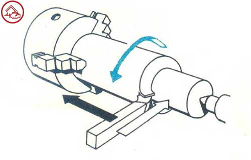
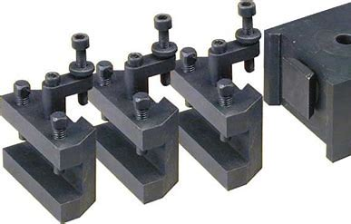
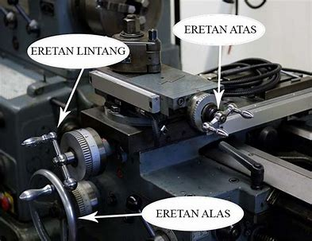
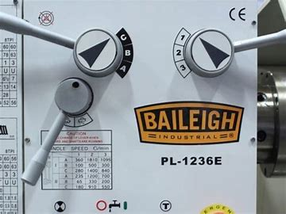

Teknik Produksi Mesin Industri
Mesin Bubut
Mesin Bubut Adalah mesin perkakas yang memutar benda kerja pada sumbu rotasi untuk melakukan berbagai proses seperti pemotongan, pengamplasan, knurking, pengeboran, deformasi, pembubutan muka, dan pemutaran, dengan alat yang diterapkan pada benda kerja untuk membuat objek dengan simetri terhadap sumbunya.
Bubut sendiri merupakan suatu proses pemakanan benda kerja yang sayatannya dilakukan dengan cara memutar benda kerja kemudian dikenakan pada pahat yang digerakan secara translasi sejajar dengan sumbu putar dari benda kerja. Gerakan putar dari benda kerja disebut gerak potong relatif dan gerakkan translasi dari pahat dan kecepatan tranlasi dari pahat disebut gerak umpan. Dengan mengatur perbandingan kecepatan rotasi benda kerja dan kecepatan tranlasi pahat maka akan diperoleh berbagai macam ulir dengan ukuran kisar yang berbeda. Hal ini dapat dilakukan dengan jalan menukar roda gigi translasi yang menghubungkan poros spindel dengan poros ulir.
Roda gigi penukar disediakan secara khusus untuk memenuhi keperluan pembuatan ulir. Jumlah gigi pada masing-masing roda gigig penukar bervariasi besarnya mulai dari jumlah 15 sampai dengan jumlah gigi maksimum 127. Roda gigi penukar dengan jumlah 127 mempunyai kekhususan karena digunakan untuk konversi dari ulir metrik ke ulir inci.
Prinsip kerja mesin bubut

Prinsip kerja mesin bubut sendiri, sebenarnya terletak pada benda kerjanya, Putaran tersebut akan disesuaikan dengan sumbu putar benda kerja, mesin bubut yang digunakan untuk menyayat siati benda akan melakukan gerakan translasi sejajar pada bagian pahat dari mesin bubut. Karena pahatan nantinya menyesuikan sumbu putar suatu benda, maka hasil bubutan tersebut akana berbentuk sebuah ulir pada benda kerja.
Benda yang akan dipotong atau dibentuk itu tadi akan dittekan dengan poros spindel dengan bantuan chuck yang memiliki rahang pada salah satu ujungnya lagi. Sehingga poros spindel akan memutar benda kerja melalui piringan pembawa sehingga akan memutar roda gigi pada porors spindel tersebut. Lewat roda gigi penghubung itu sendiri, putaran akan diteruskan ke roda gigi poros ulir. Oleh krem berulir, putaran poros ulir tersebut akan diubah menjadi gerak lain yaitu gerak translasi pada eretan yang membawa pahat. Maka dari pada itu benda kerja akan terkena atau terjadi sayatan yang berbentuk ulir.
Bagian - Bagian Mesin
Mesin bubut terdiri dari kepala tetap dan meja. Adapun penjelasannya sebagai berikut.
Kepala tetap

Kepala teteap adalah bagian dari mesin bubut yang terletak disebelah kiri mesin, dan bagian inilah yang memutar benda kerja yang di dalamnya terdapat transmisi roda gigi. pada kepala tetep ini ditempatkan berbagai bagian mesin yang memudahkan kita melakukan pekerjaan. Beberapa bagian yang ada di kepala tetap adalah Plat mesin : Engkol pengatur pemasangan roda gigi : Cakra bertingkat : Motor penggerak mesin. Pada kepala tetap ini pula kita memasang alat pemegang benda kerja sehingga aman pada saat dikerjakan. Alat pemegang ini disebut Cekam. cekam ini dibedakan menjadi dua, yaitu Cekam rahang tiga dan Cekam rahang empat. Cekam rahang tiga bergerak serentak. Cekam rahang empat, pada saat kita menggerakkan kunci penggeraknya, maka rahang yang bergerak adalah satu persatu
Selang coolant atau pendingin

Berfungsi untuk menyemprotkan cairan coolant saat membubut. Coolant berguna untuk menyetabilkan suhu alat potong dan sehingga ketajaman mata potong bisa lebih awet dan hasil pembubutan lebih optimal. Contohnya dalam proses pengeboran benda kerja. Namun tidak semua jenis alat membutuhkan coolant dalam pembubutan
Tool post atau dudukan pahat

Toolpost ini berada di atas eretan atas. Digunakan untuk memegang atau menjepit pahat bubut saat proses pembubutan. Secara umum, tool post ada dua macam, yaitu :
Standar tools post
Tool post yang dalam pengaturan ketinggian mata pahat menggunakan ganjal. Cara mengencangkan pahat dengan cara mengencangkan baut baut yang terdapat di bagian atas tool post. Menurut jumlah rumah pahatnya tool post stand standar ada dua macam, yaitu memiliki rua=mah pahat satu dan rumah pahat empat. Tool post dengan satu rumah pahat, menyebabkan jumlah pahat yang dapat dipasang hanya satu. Ketika harus mengganti pahat, operator harus mengatur ketinggian lagi untuk pahat selanjutnya. Sedangkan untuk tool post dengan empat rumah, operator bisa memasang maksimal 4 jenis pahat berbeda. Sehingga hanya perlu mengatur ketinggian pahat sekali saja untuk setiap pahat dan bisa mengganti pahat tanpa harus menyetel pahat lagi.
Adjustable tool post
Tool post yang dalam mengatur ketinggian mata pahat tanpa menggunakan ganjal. Karena sudah dilengkapi dengan perlengkapan mekanik yang dapat mengatur ketinggian pahat. Tool post ini ada dua macam, yaitu memiliki rumah pahat satu dan lebih dari satu. Penggunaannya sama dengan standar tool post.
Kepala lepas

Bagian dari mesin bubub yang letaknya di sebelah kanan dari mesin bubut, yang berfungsi untuk menopang benda kerja yang panjang. Pada saat mengerjakan benda berukuran panjang, kemungkinan bengkok sangat besar sehingga harus ditopang pada kedua ujung, yaitu di kepala tetap dan kepala lepas ini. Beberapa bagian yang ada di kepala lepas adalah : Center Putar, untuk menopang benda kerja agar tidak terjadi gesekan, Handwill, Pengunci poros, Pengunci alas.
Eretan

Eretan adalah alat yang digunakan untuk melakukan proses pemakanan pada benda kerja dengan cara menggerakkan ke kiri dan ke kanan sepanjang meja. Eretan utama akan bergerak sepanjang meja sambil membawa eretan lintang dan eretan atas dan dudukan pahat.
Eretan alas
Ialah eretan yang kedudukannya pada alas mesin dan dapat bergerak ke kiri atau ke kanan sepanjang alas. Di dalamnya terdapat perlengkapan mekanik yang menggerakan eretan tersebut secara otomatis atau digerakan dengan tangan.
Eretan lintang
Berada diatas eretan alas dan kedudukannya melintang terhadap alas. Gerakan melintang, yaitu menjauhi atau mendekati operator, baik diputar dengan tangan maupun secara otomatis. Kegunaan eretan ini antara lain untuk memberikan tebal pemakanan pahat atau menggerakan pemakanan pahat. Pada bagian yang dekat dengan pemutarnya terdapat skala ukuran. Dengan skala ini kita dapat mengatur tebal penyayatan pahat.
Eretan atas
Terletak di atas eretan lintang dan diikat eleh 2 baut. Pada eretan ini terpasang rumah pahat. Kedudukan eretan dapat diubah ubah atau diputar 360 derajat Sesuai dengan sebutuhan. Pada bagian alasnya terdapat skalah derajat. Eretan ini khususnya untuk membuat tirus dengan sudut yang besar pada jarak pendek. Gerakanya tidak otomatis.
Motor penggerak

Motor penggerak berada dibawah kepala tetap atau gear box. Berfungsi mengubah energi listrik menjadi energi mekanik atau memberikan mesin tenaga untuk bergerak.
Tombol emergency stop

Digunakan dalam keadaan darurat untuk mematikan mesin. Tombol ini termasuk hal yang penting untuk keselamatan kerja. Umumnya mesin mesin memiliki tombol ini.
Handle atau tuas

Handle pada setiap mesin bubut berbeda-beda. Beda pabrik, beda ukuran, berbeda pula handle handlenya. Cara menggunakan handle dapat disesuaikan atau berpedoman pada tabel yang menempel pada mesin. Fungsi dari handle ini ada berbagai macam, Antara lain
- Pengaturan kecepatan (RPM)
- Pengaturan feeding atau kecepatan pemakanan secara otomatis
- Pengaturan arah pemakanan
- Pengaturan penguliran
- Menyalakan dan mematikan mesin
- pengaturan arah putaran spindle
Lampu penerangan
Lampu ini digunakan untuk membantu operator melihat benda kerja saat dibubut. Berguna juga untuk membantu operator melihat hasil pengukuran benda kerja. Namun tidak semua mesin bubut dilengkapi dengan lampu.
Alas mesin

Alas mesin digunakan sebagai tumpuan gaya pemakanan pada waktu pembubutan dan juga sebagai tempat kedudukan kepala lepas, eretan, penyangga diam (Steady rest).
Poros transportir dan poros pembawa

Poros transportir adalah poros berulir berbentuk segi empat atau trapesium dengan jenis ulir withworth (Inchi) atau metrik (MM) yang terletak dibawah eretan alas. Berfungsi untuk membawa eretan pada wahtu pembubutan secara otomatis, misalnya pembubutan arah memanjang/melintang dan ulir. Poros transpor untuk mesin bubut standar pada umumnya kisar ulirnya antara dari 6 sampai 8 mm. Poros pembawa adalah poros yang selalu berputar untuk membawa atau mendukung jalannya eretan dalam proses pemakanan secaa otomatis untuk pengaturan kecepatan pemakan otomatis, dapat dilihat dari tabel pemakanan pada mesin. Agar dapat memilih kecepatan yang tepat dan mendapatkan hasil pembubutan sesuai dengan kebutuhan. Cara pengaturannya mirip dengan kebutuhan. Cara pengaturannya mirip dengan pengaturan rpm dengan mengatur handle
Rem kaki
Digunakan untuk menghentikan mesin. Rem ini sangat berguna ketika mengulis dan berhenti pada posisi tertentu. Dalam keadaan darurat, operator juga bisa menggunakan rem kaki untuk menghentikan mesin.
Demikianlah pembahasan lengkap mengenai komponen utama mesin bubut dan fungsinya.